Japon Bahçesi
Bölgemizin yeni yapılarından olan japon bahçesi kentin içinde insanları bir araya getirebilen bir alan sunmakta aynı zamanda bambu fabrikası olarak çalışmakta

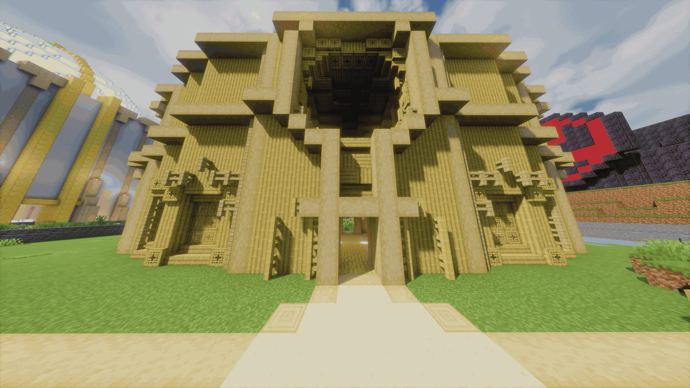

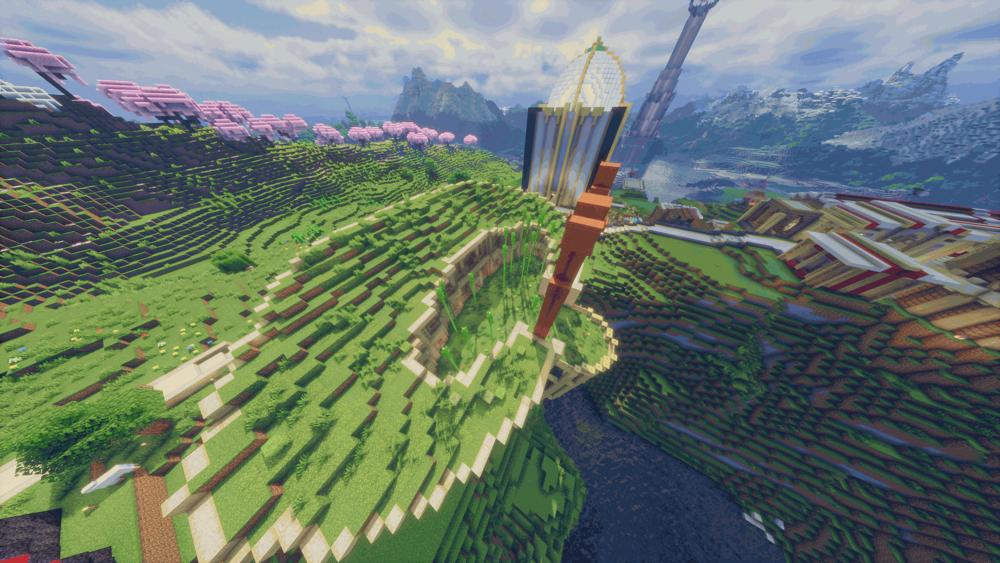
Bölgemizin yeni yapılarından olan japon bahçesi kentin içinde insanları bir araya getirebilen bir alan sunmakta aynı zamanda bambu fabrikası olarak çalışmakta



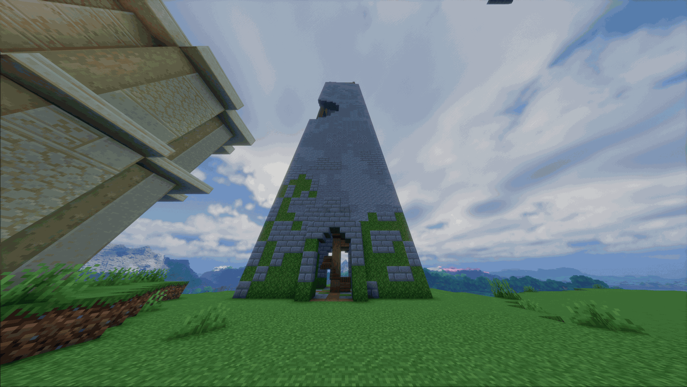
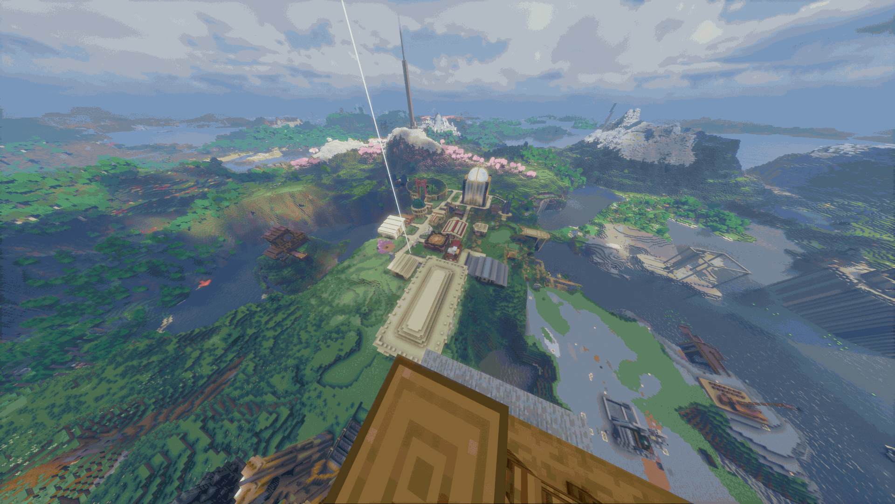
kentin insanlarına kuş bakışı bir görüş sağlamak ve yer altı sistemine hızlı bir bağlantı kurmakta
Kentin inşasında kullanılan tüm malzemelerin bulunduğu bir yönetim merkezidir

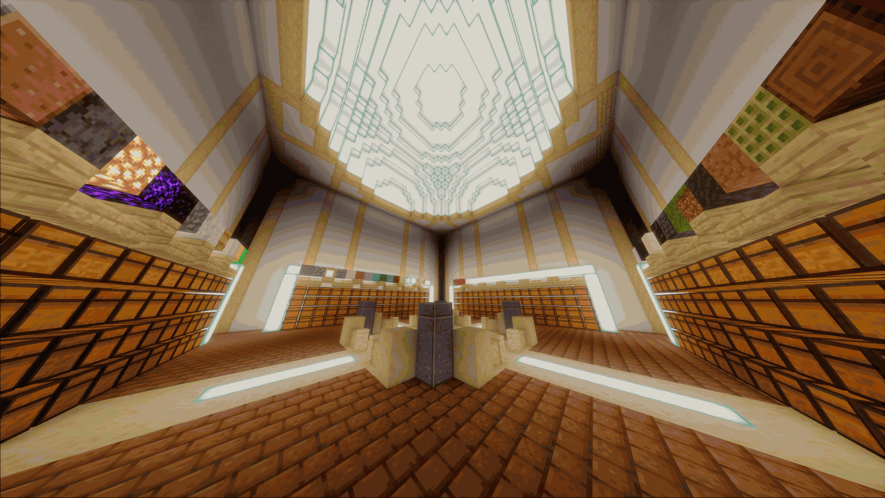
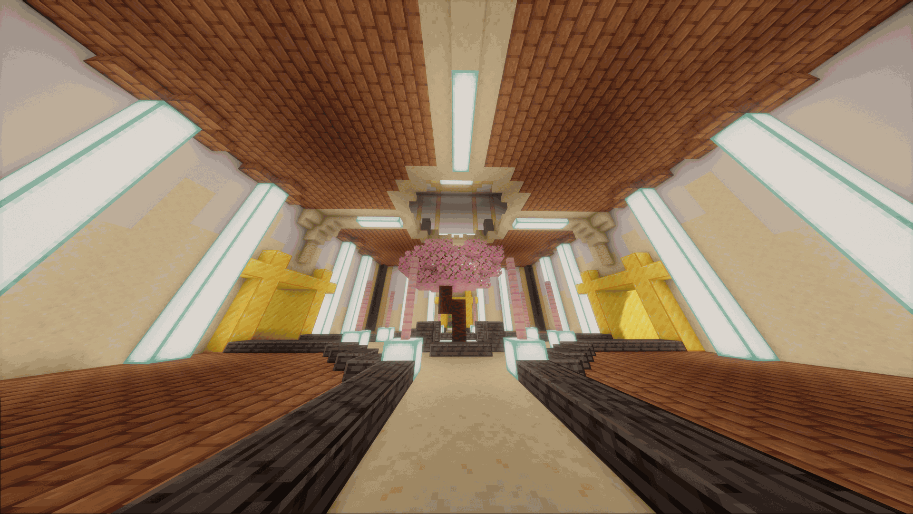

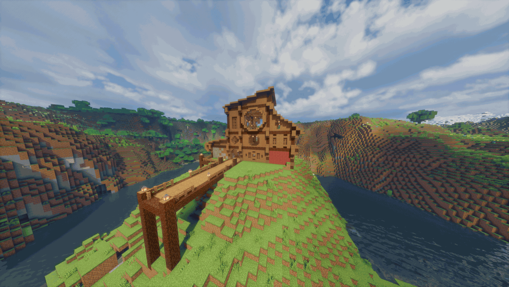
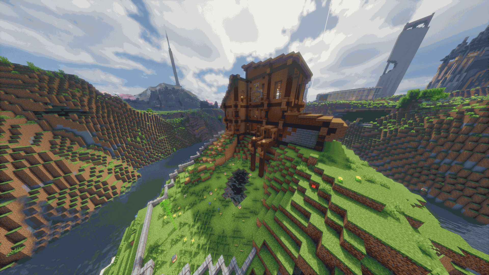
Kentin ilk binası olmakla beraber insanların birlikte çalışabilecekleri bir atolye görevi sunmaktadır halen daha resterasyon altında
Şehrin yeni ikonlarından olan kilise şekil dursun diye yapılmıştır
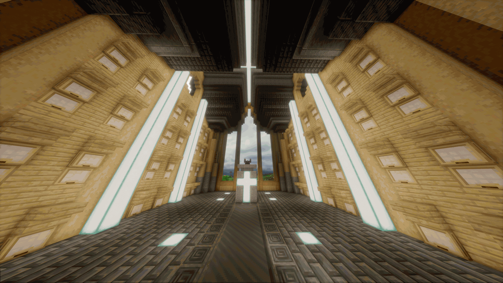
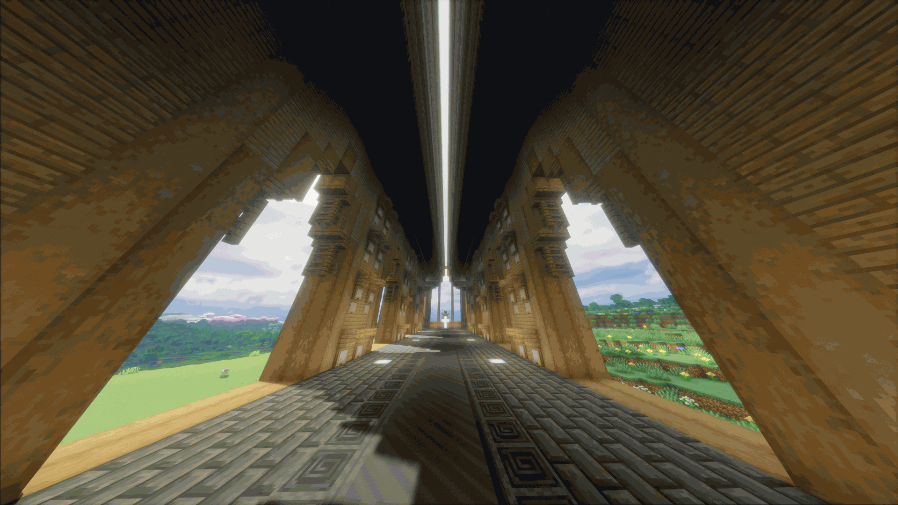
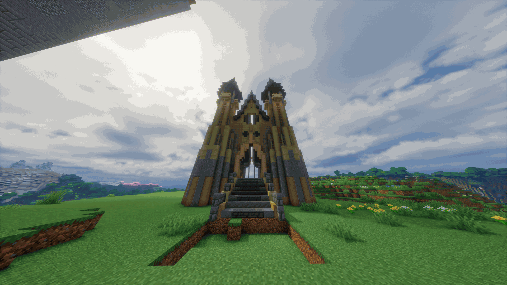
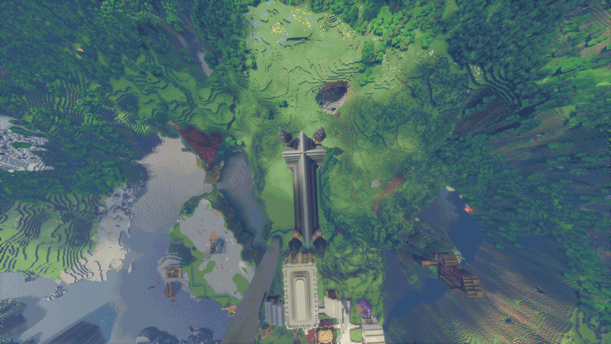

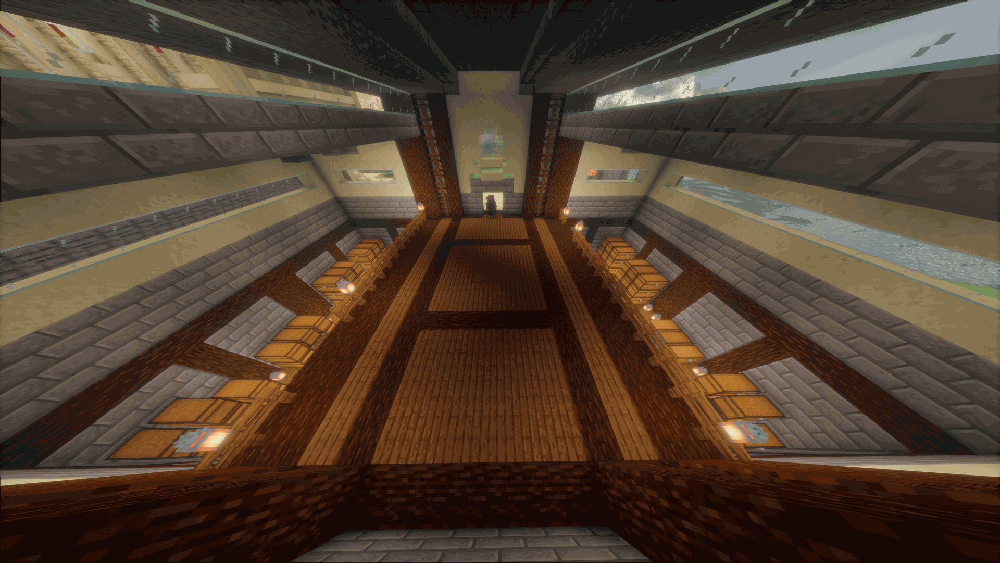
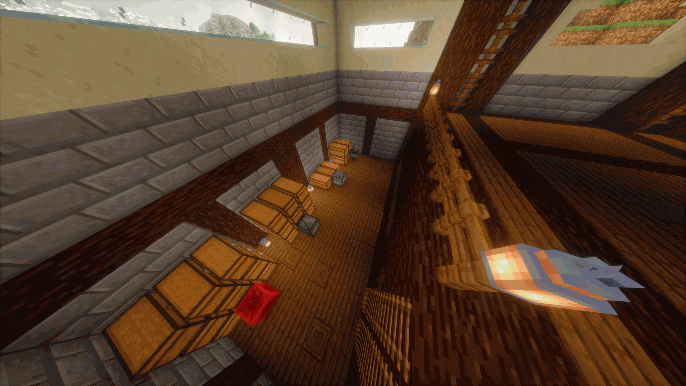
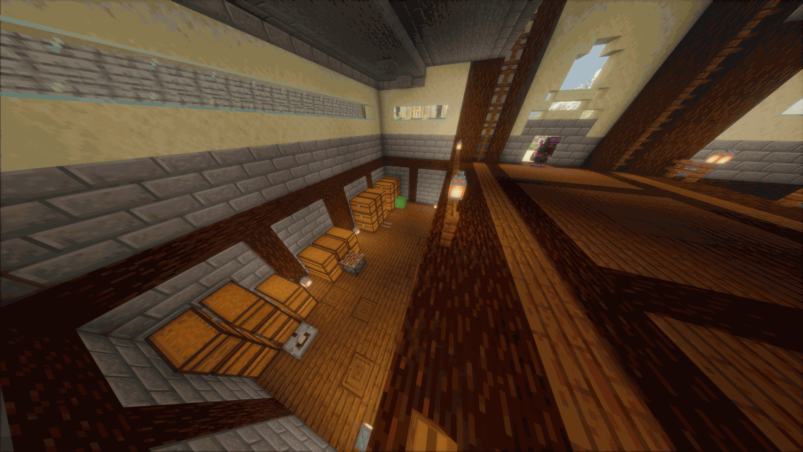
Elektronik esyaların depolanıp muhafaza edildiği yerdir kentin alt yapısını ayakta tutar
Kentin dekorlarını dikiş nakış işleri burda yapılıp dağıtıma cıkmakta
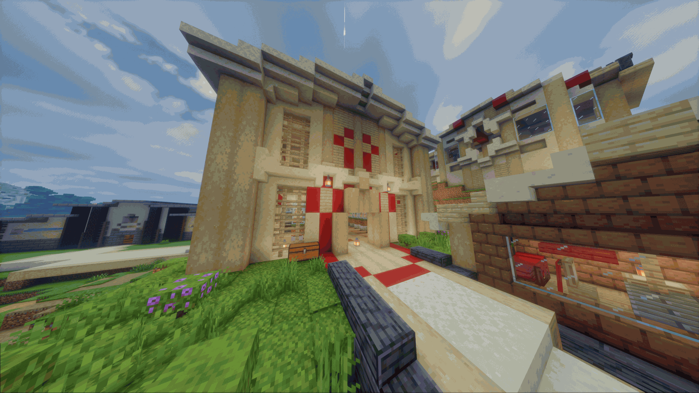
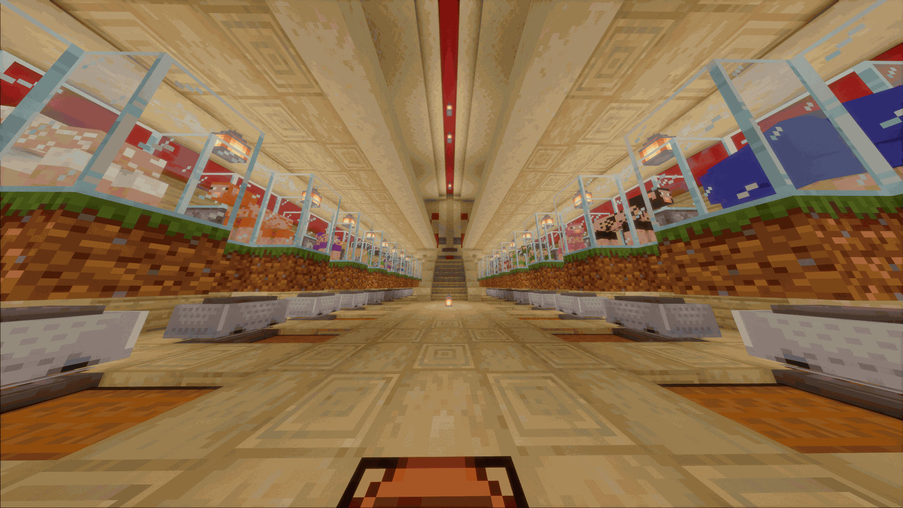
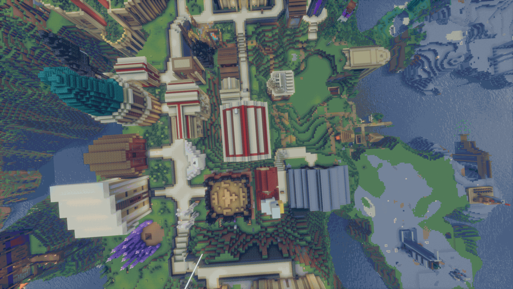